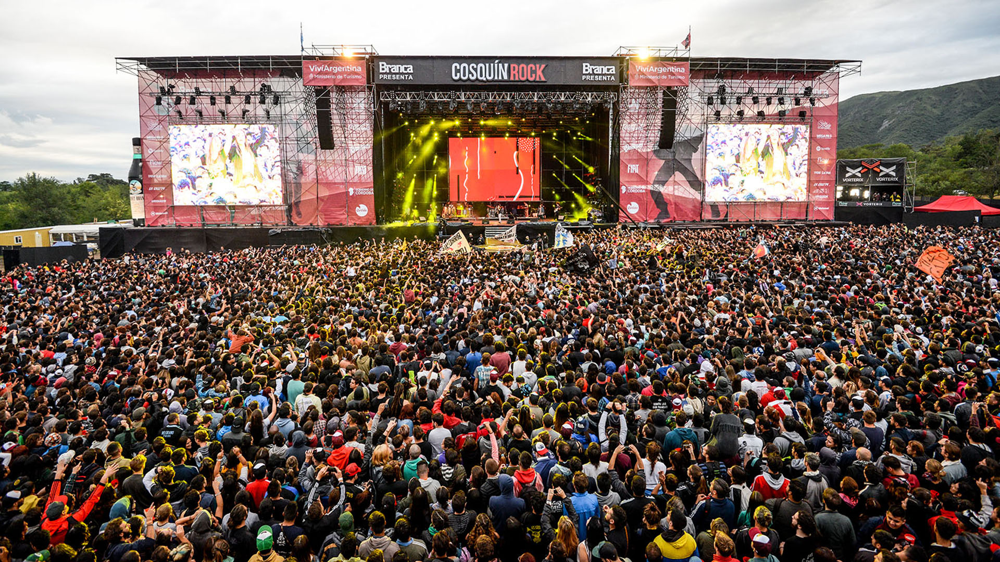

Conoce las fiestas más populares de Córdoba, donde la música, la cultura y la diversión se combinan para crear una experiencia única.
Cosquín Rock
El Cosquín Rock es uno de los festivales de música más importantes de Argentina, y tiene lugar en la ciudad de Cosquín, en las sierras de Córdoba. Este evento reúne a miles de personas cada año para disfrutar de una variada oferta de música rock, tanto nacional como internacional.

Bum Bum
El Bum Bum es otro evento emblemático de Córdoba, una fiesta que combina música, baile y diversión en un ambiente relajado y festivo. Se celebra en varias localidades de la provincia, y su popularidad crece cada año, con miles de asistentes que disfrutan de ritmos y espectáculos en vivo.
Otras Fiestas Tradicionales
Córdoba cuenta con muchas más festividades populares, como el Festival de La Falda, el Festival nacional de Folklore de Cosquín y el Festival Internacional de Titeres, entre otros. Cada uno con su particularidad y atractivo cultural.